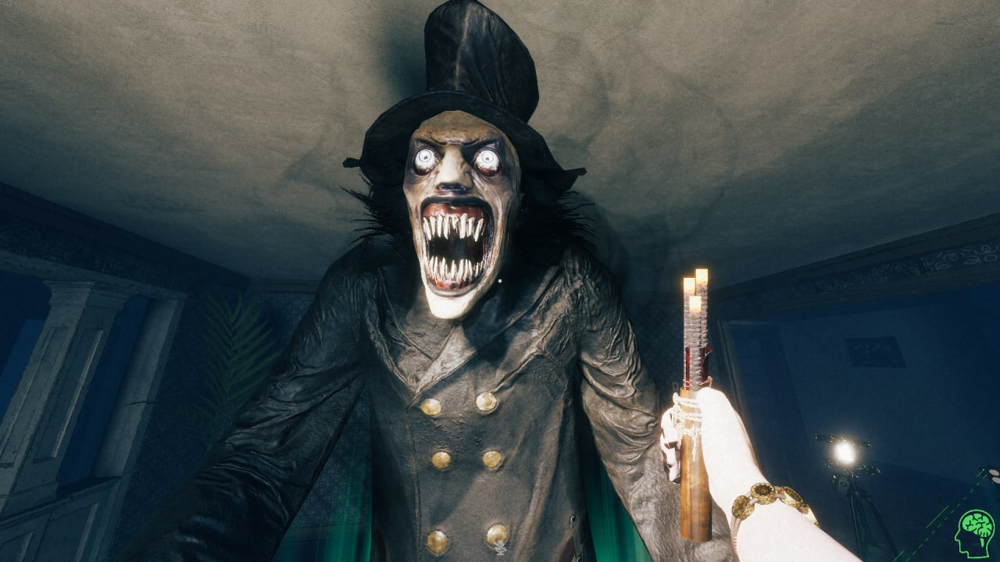
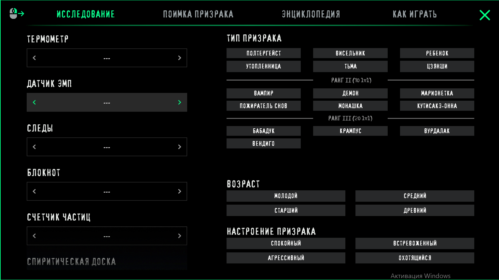

1.Парящие в воздухе предметы
2.Различного рода звуки (всхлипы, зловещие вздохи и т. д.)
3.Призрак нападет на охотника и утащит его в неизвестном направлении. Игрок появляется в совершенно другом месте
4.Атака фантома заставляет возникнуть в совершенно неожиданный момент перед экраном
5.Взрывы лампочек
6.Блокирование дверей
7.Появление привидения на арене
Ранг 1
Полтергейст Висельник Ребенок Утоплиница Тьма ЦзяншиРанг 2
Вампир Демон Марионетка Пожиратель снов Монашка Кутисакэ-ОннаРанг 3
Бабадук Крампус Вурдалак ВендигоДелятся на возраст:
1.Молодой
2.Средний
3.Старший
4.Древний
А настроение бывает:
1.Спокойное
2.Встревоженное
3.Агрессивное
4.Охотящийся
